Juan Juan Guillermo Rivera Berrío

¿Cómo funciona el internet de las cosas (IoT)?
Juan Guillermo Rivera Berrío
Fondo Editorial RED Descartes

Córdoba (España)
2026
2026
¿Cómo funciona el internet de las cosas (IoT)?
Autor:
Juan Guillermo Rivera Berrío
Código JavaScript para el libro: Joel Espinosa Longi, IMATE, UNAM.
Recursos interactivos: DescartesJS, Herramientas de IA, ChatGPT y Gemini.
Fuentes: Lato y UbuntuMono
Imagen de portada: ilustración generada por GPT Image 2
Red Educativa Digital Descartes
Córdoba (España)
descartes@proyectodescartes.org
https://proyectodescartes.org
Proyecto iCartesiLibri
https://proyectodescartes.org/iCartesiLibri/index.htm
ISBN: 978-84-10368-58-3

Esta obra está bajo una licencia Creative Commons 4.0 internacional: Reconocimiento-No Comercial-Compartir Igual.
Tabla de contenido
Prefacio
Comprender el mundo comienza por hacerse una pregunta sencilla, pero poderosa: ¿cómo funciona? Detrás de cada objeto, fenómeno, tecnología o proceso existe un conjunto de principios que explican su funcionamiento y que permiten transformar la curiosidad en conocimiento. Esa idea constituye la esencia de la colección ¿Cómo funciona?, una serie de libros concebida para acercar temas complejos a estudiantes, docentes y lectores interesados mediante explicaciones claras, rigurosas y apoyadas en recursos visuales e interactivos.
¿Cómo funciona el Internet de las Cosas (IoT)? forma parte de esta colección con el propósito de mostrar cómo millones de dispositivos conectados están cambiando la manera en que vivimos, trabajamos y nos relacionamos con nuestro entorno. Desde sensores inteligentes y hogares automatizados hasta ciudades inteligentes, industria 4.0, computación en el borde y ciberseguridad, este libro explica los fundamentos tecnológicos que hacen posible una de las revoluciones más importantes de la era digital.
La colección ¿Cómo funciona? se caracteriza por combinar el rigor científico con un lenguaje accesible, integrando ejemplos cotidianos, ilustraciones, modelos matemáticos, aplicaciones reales y actividades que favorecen el aprendizaje activo. Cada capítulo responde a una pregunta concreta, permitiendo que el lector construya el conocimiento de manera progresiva y comprenda no solo qué es una tecnología, sino también por qué funciona y cuál es su impacto en la sociedad.
Uno de los aspectos más innovadores de esta obra es la incorporación de objetos interactivos, simulaciones, cuestionarios y experiencias de aprendizaje desarrolladas con tecnologías web modernas.
Estos recursos invitan al lector a experimentar, explorar y comprobar los conceptos presentados, convirtiendo la lectura en una experiencia dinámica que trasciende las páginas del libro. La integración de herramientas como DescartesJS y diversas aplicaciones basadas en inteligencia artificial demuestra cómo la tecnología también puede enriquecer la forma en que aprendemos.
El Internet de las Cosas representa mucho más que una red de dispositivos conectados. Es la convergencia entre la electrónica, las telecomunicaciones, la informática, la inteligencia artificial y la ciencia de los datos para crear sistemas capaces de percibir su entorno, comunicarse y tomar decisiones en tiempo real. Comprender estos principios resulta cada vez más importante para quienes desean desenvolverse en una sociedad profundamente digitalizada.
Esperamos que este libro despierte la curiosidad del lector, fortalezca su pensamiento crítico y le permita descubrir que detrás de cada avance tecnológico existen principios científicos y de ingeniería que pueden comprenderse cuando se explican de forma clara y cercana. Ese es, precisamente, el propósito de la colección ¿Cómo funciona?: hacer del conocimiento una experiencia accesible, visual, interactiva y estimulante para todos.
Bienvenido a este recorrido por el fascinante universo del Internet de las Cosas, donde cada capítulo responde una nueva pregunta y cada respuesta abre la puerta a nuevos descubrimientos.
Juan Guillermo Rivera Berrío
2026
Introducción
El Internet de las Cosas, o IoT por sus siglas en inglés (Internet of Things), es una revolución tecnológica que se basa en un concepto fundamental: conectar objetos físicos cotidianos a Internet para que puedan recopilar, compartir y actuar sobre un flujo de datos sin necesidad de intervención humana directa. Su principio de funcionamiento radica en transformar elementos inanimados —desde un simple reloj de pulsera hasta maquinaria industrial compleja— en nodos inteligentes dentro de una inmensa red global. Esta interconexión constante permite que los aparatos "hablen" entre sí, creando un ecosistema dinámico donde la información fluye en tiempo real para tomar decisiones de forma automatizada.
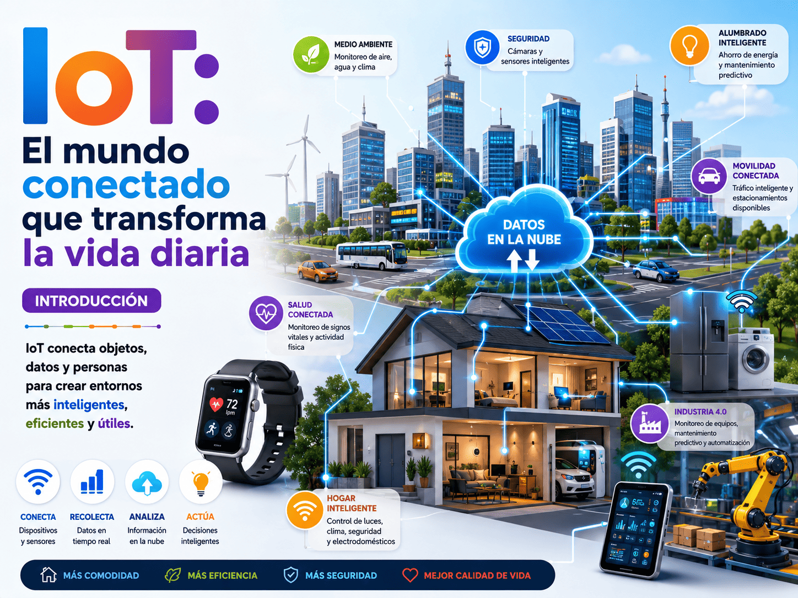
Para lograr este intercambio de manera estructurada, la arquitectura del IoT depende de un ciclo de procesos internos que operan de forma ininterrumpida a través de cuatro componentes principales:
Sensores y actuadores: Son los "sentidos" y "músculos" del sistema; capturan magnitudes físicas del entorno (como luz, temperatura o movimiento) y, cuando es necesario, ejecutan acciones físicas.
Conectividad: Emplea redes y protocolos de comunicación (como Wi-Fi, 5G, Bluetooth o LoRa) para canalizar la información recabada.
Procesamiento de datos: Ocurre típicamente en servidores en la nube o en el borde de la red (Edge Computing), donde sofisticados algoritmos filtran e interpretan la información bruta.
Interfaz de usuario: Es el entorno visual (como una aplicación móvil o un panel de control) que permite al usuario humano supervisar los datos o configurar reglas de comportamiento.
La escala intrínseca de esta tecnología implica el manejo de volúmenes colosales de información, lo que representa un reto directo para la ingeniería de redes. Para comprender esta magnitud matemáticamente, podemos modelar el volumen total de datos generados en una red de IoT. Si consideramos un sistema compuesto por $N$ dispositivos conectados, donde cada uno emite datos a una tasa promedio de transmisión $R$ (en bytes por segundo) durante un intervalo de tiempo $T$, el volumen total de información $V$ se define como:
$$V = N \cdot R \cdot T$$A medida que la variable del número de dispositivos conectados, representada por la incógnita $N$, crece exponencialmente hacia los miles de millones a nivel mundial, la infraestructura de telecomunica-
ciones debe aplicar complejos teoremas matemáticos de compresión de datos y un rediseño de las infraestructuras físicas para sostener este tráfico masivo sin latencia.
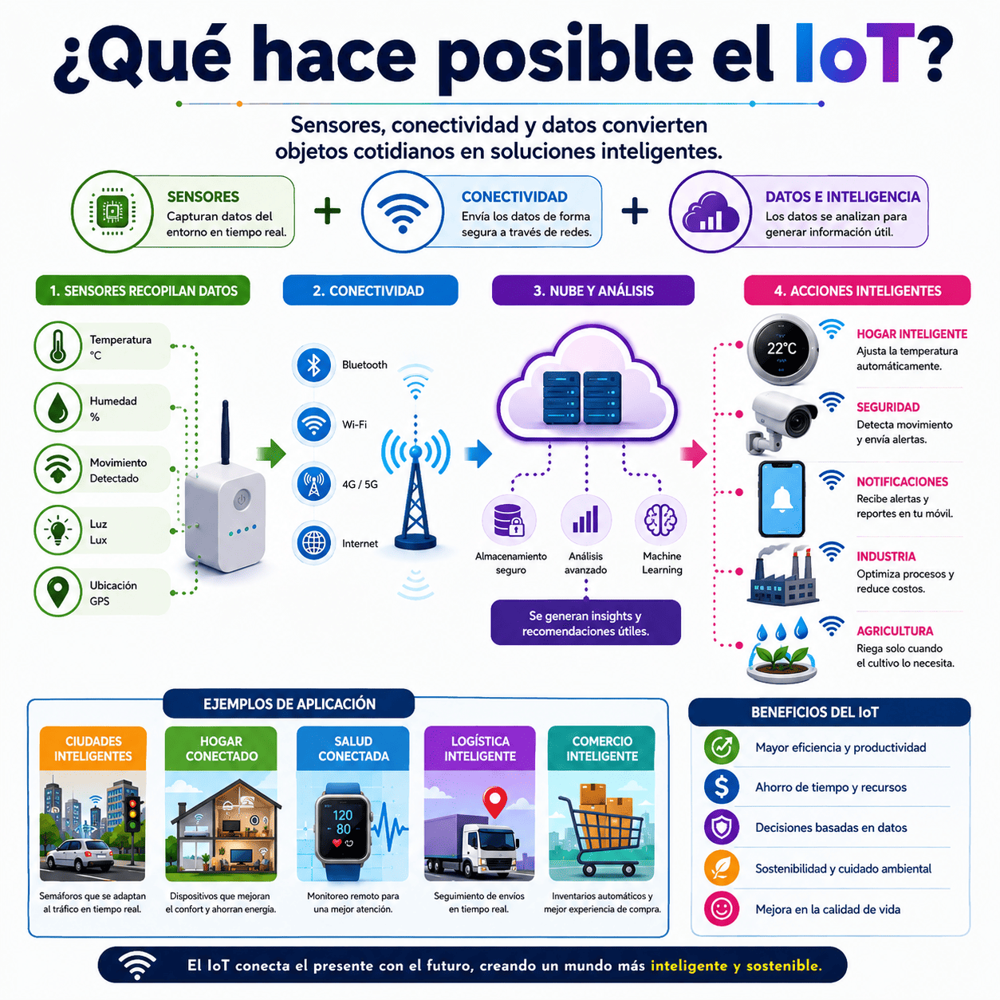
Al llevar este entramado tecnológico a la vida diaria, las aplicaciones prácticas inciden en casi todos los sectores de la sociedad. Un destacado ejemplo entre los casos reales se sitúa en la domótica, con termostatos inteligentes que analizan de forma autónoma los patrones térmicos de una vivienda para climatizar las habitaciones, ahorrando energía.
A una escala mayor, encontramos el IoT Industrial (IIoT), donde sensores adheridos a turbinas de aviones miden variaciones microscópicas de la presión y advierten a los ingenieros de probables fallos estructurales antes de que ocurran, materializando lo que hoy conocemos como mantenimiento predictivo.
Naturalmente, este despliegue masivo aporta formidables beneficios y ventajas, como la optimización de los sistemas de producción mecánica, la reducción de los costos operativos y un aumento sustancial en la calidad de nuestro nivel de vida rutinario. Sin embargo, la red enfrenta críticos desafíos o limitaciones que no pueden ignorarse. La ciberseguridad es el reto más prominente, dado que cualquier bombilla inteligente mal protegida podría convertirse en un puente de acceso a información privada. Además, la ausencia de una estandarización tecnológica entre fabricantes y la vulnerabilidad de la privacidad del usuario continúan siendo frentes abiertos que la comunidad científica deberá resolver para un futuro plenamente interconectado.
El siguiente objeto interactivo simula el funcionamiento de un panel de sensores ambientales, ideal para introducir conceptos de Internet de las Cosas (IoT) y sistemas de monitoreo en un cuarto. Cada control representa un sensor real y su efecto se visualiza al instante en una escena interactiva tipo "ventana de ambiente"; por ejemplo, la humedad agrega niebla/vaho sobre la escena y gotas de condensación en la ventana.
¿Cómo funcionan los sensores inteligentes?
En el ecosistema del Internet de las Cosas (IoT), los sensores inteligentes actúan como los verdaderos sistemas sensoriales de la red, encargados de percibir el mundo físico y traducirlo al lenguaje digital. A diferencia de un sensor tradicional que únicamente genera una alerta eléctrica básica ante estímulos como la temperatura o la presión, un sensor inteligente está dotado de capacidad de procesamiento local y conectividad de red. Este concepto fundamental permite no solo detectar variaciones en el entorno, sino también filtrar ruido, autocalibrar señales y tomar decisiones preliminares antes de enviar la información a la nube.
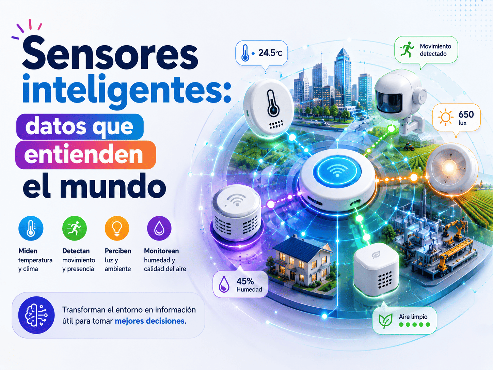
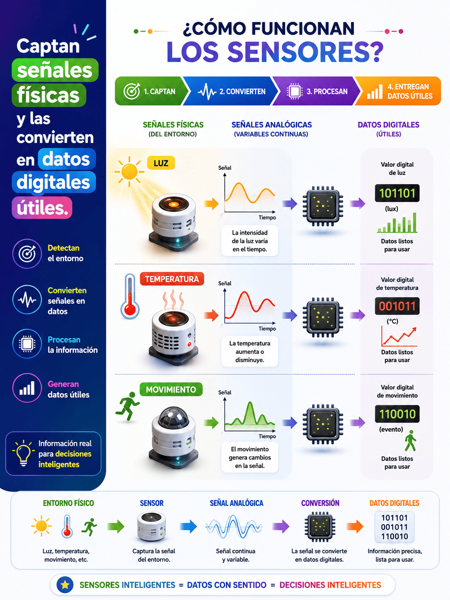
Para lograr esta autonomía y eficiencia funcional, la arquitectura interna de estos dispositivos se estructura en cuatro componentes principales:
Elemento transductor: Capta la magnitud física y la convierte en una señal analógica continua temporal, representada como un voltaje $V(t)$.
Convertidor Analógico-Digital (ADC): Circuito responsable de discretizar y medir la señal eléctrica sin procesar.
Microcontrolador: Cerebro local que procesa la información digitalizada mediante algoritmos integrados.
Transceptor de comunicación: Módulo que envía y recibe datos mediante protocolos inalámbricos como Wi-Fi, Zigbee o LoRaWAN.
Durante sus procesos internos, la transformación de la señal física a un dato útil computacional es la etapa más crítica. La exactitud con la que el sensor reconoce una variación física depende fuertemente de la resolución de su ADC. Matemáticamente, el tamaño del escalón lógico o "cuanto" de cuantificación se define mediante la siguiente ecuación:
$$Q = \frac{V_{max} - V_{min}}{2^n}$$Donde $V_{max}$ y $V_{min}$ representan el límite superior e inferior del rango de voltaje operativo del sensor, y $n$ es el número de bits de resolución. Una vez que el microcontrolador obtiene este valor $Q$, ejecuta algoritmos para calcular promedios o detectar anomalías mediante una técnica conocida como Edge Computing (computación en el borde).
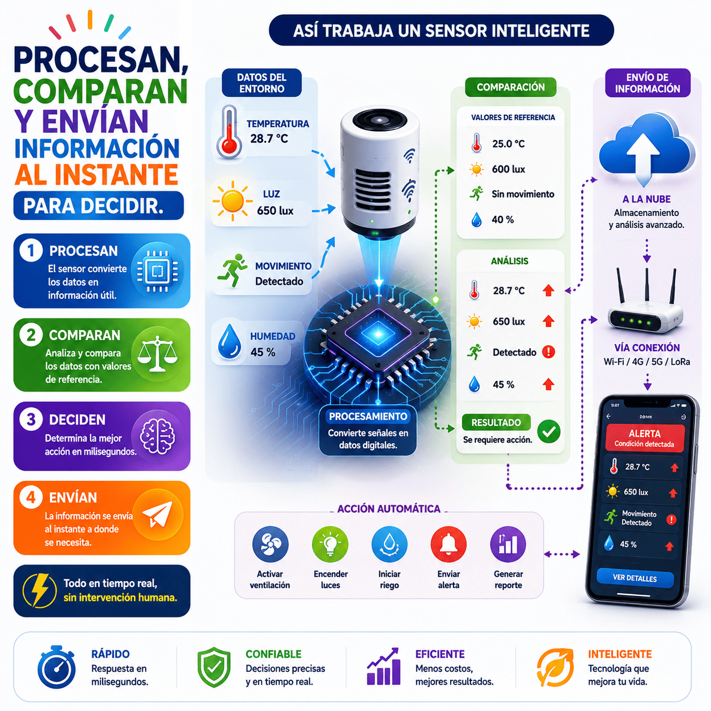
La principal ventaja del Edge Computing integrado en los sensores es la drástica reducción de la latencia y el ahorro en el ancho de banda. Si un componente térmico registra la temperatura, en lugar de transmitir cientos de lecturas redundantes por minuto, el sensor calcula variables como la tasa de cambio térmico ($\Delta T / \Delta t$) y solo transmite un paquete de datos de alerta si el resultado supera un umbral crítico preprogramado. Esta eficiencia energética permite que los nodos de IoT operen durante años impulsados por baterías del tamaño de una moneda.
La robustez de este principio de funcionamiento ha impulsado innumerables aplicaciones prácticas en el mundo moderno. Un caso real paradigmático se observa en la agricultura de precisión, donde sondas inteligentes enterradas en los cultivos miden la humedad del sustrato. Al procesar localmente que el nivel freático ha caído y cruzar esta información con pronósticos ambientales, el sensor se comunica autónomamente con las válvulas de riego para suministrar el volumen de agua exacto. Sin embargo, no están exentos de desafíos o limitaciones; el principal obstáculo actual es la ciberseguridad. Al poseer microprocesadores y estar permanentemente conectados, cada sensor inteligente representa una posible puerta de entrada para ataques informáticos si los datos no están correctamente cifrados, exigiendo arquitecturas de seguridad robustas desde su fase de diseño.
¿Cómo funciona el IoT?
Puzle hexagonal
¿Cómo funcionan los dispositivos conectados?
Los dispositivos conectados, piedra angular del ecosistema del Internet de las Cosas (IoT), son objetos físicos diseñados para interactuar de forma autónoma tanto con su entorno como con otros sistemas a través de una red. Desde su concepto fundamental, estos dispositivos operan bajo el principio continuo de captura, procesamiento y transmisión de datos. A diferencia de los aparatos electrónicos tradicionales que requieren de una intervención humana constante, un dispositivo IoT actúa como un nodo inteligente capaz de percibir variables físicas del mundo real, interpretarlas de manera preliminar y enviar esa información a la nube computacional (o a un servidor local) para su posterior análisis o para la toma de decisiones automatizada.
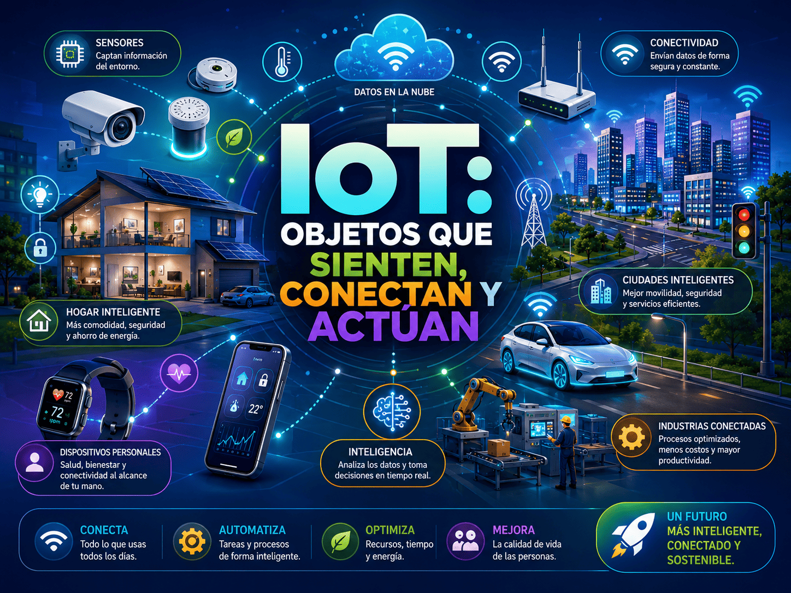
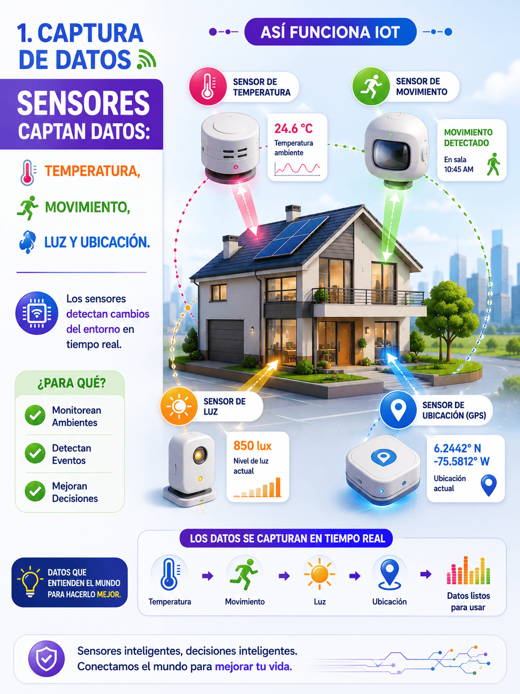
Para lograr este nivel de autonomía computacional, la arquitectura de cualquier dispositivo conectado se estructura invariablemente a partir de cuatro componentes principales:
Sensores y actuadores: Los sensores recaban información física y química del entorno (como temperatura, humedad, presión o movimiento). Por el contrario, los actuadores ejecutan acciones físicas en respuesta a una señal o comando digital (como encender una bombilla o cerrar una válvula hidráulica).
Microcontrolador (CPU): Constituye el "cerebro" local del equipo; ejecuta un sistema operativo básico o firmware y tiene la capacidad suficiente para gestionar los datos obtenidos de los sensores antes de transmitirlos.
Módulo de comunicación: Es el hardware responsable de enlazar el dispositivo con el resto de la red. Utiliza diversos protocolos según sus requerimientos de alcance o energía, tales como Wi-Fi, Bluetooth Low Energy (BLE), Zigbee, o tecnologías celulares como NB-IoT y 5G.
Fuente de alimentación: Proporciona la energía requerida, pudiendo ser desde una conexión directa a la red eléctrica hasta diminutas baterías de iones de litio o incluso sistemas de recolección de energía ambiental (paneles solares microscópicos).
El proceso interno de estos equipos sigue una secuencia rigurosa para garantizar su eficiencia. Inicialmente, un sensor mide una magnitud física continua y genera una señal eléctrica analógica. Esta señal atraviesa un convertidor analógico-digital (ADC) para que el microprocesador pueda procesarla mediante bits discretos. Luego, el módulo de comunicación encapsula esta información y la transmite hacia el receptor.
En este punto, la optimización de la red puede analizarse mediante el tiempo necesario para enviar dicha información. El tiempo de transmisión teórico se formula como:
$$T = \frac{D}{R}$$Donde $T$ es el tiempo de transmisión expresado en segundos, $D$ representa la carga útil de los datos a enviar (en bits), y $R$ es la tasa de transferencia o el ancho de banda del canal de comunicación local (en bits por segundo).
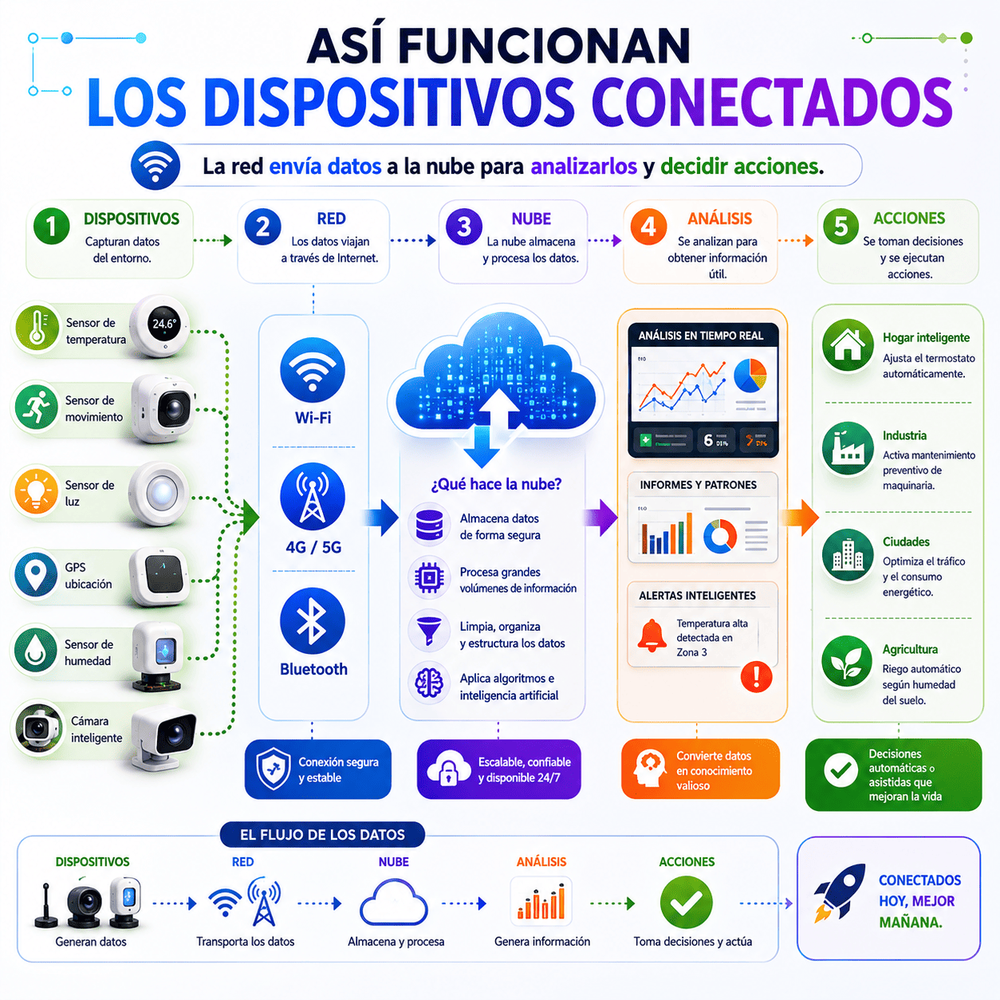
Las aplicaciones prácticas y los ejemplos reales de estos procesos son innumerables y están transformando múltiples sectores de manera profunda. En los hogares inteligentes contemporáneos, un ejemplo clásico es el termostato automatizado (como el caso comercial de Google Nest); este dispositivo detecta continuamente la temperatura y la presencia física, aprendiendo de los patrones de los usuarios para decidir, sin ayuda, en qué momento encender o apagar la calefacción. En el sector manufacturero, conocido como el Internet de las Cosas Industrial (IIoT), se instalan diminutos sensores de vibración acústica en motores de miles de caballos de fuerza. Estos sensores envían constantemente patrones de frecuencia a la nube con el único fin de alertar sobre posibles fallos en los rodamientos meses antes de que se produzca una rotura real.
En las redes IoT de largo alcance y bajo consumo (LPWAN), la tasa $R$ suele ser sumamente baja, por lo que ingenieros y desarrolladores deben comprimir el tamaño del dato $D$ al mínimo posible para conservar la energía de las baterías.
El auge global de esta tecnología aporta notables beneficios y ventajas, destacándose la automatización radical, la drástica reducción de costos operativos y la posibilidad de ejecutar el mantenimiento predictivo, lo cual prolonga la vida útil de grandes maquinarias. No obstante, el manejo de millones de estos dispositivos hiperconectados también conlleva importantes desafíos o limitaciones. La seguridad cibernética es la barrera más crítica: cualquier dispositivo conectado con un cifrado de bajo nivel representa una potencial puerta trasera o vulnerabilidad para redes empresariales completas. A esto se suma el problema de la interoperabilidad entre fabricantes y los obstáculos inherentes de lidiar con la latencia en áreas de infraestructura tecnológica deficiente.
¿Cómo funcionan los dispositivos conectados?
Cuestionario con temporizador
¿Cómo funciona la comunicación
entre dispositivos?
La comunicación entre dispositivos en el marco del Internet de las Cosas (IoT) obedece al concepto fundamental de la comunicación máquina a máquina (M2M), un paradigma que permite a los objetos físicos intercambiar información de forma autónoma, sin la necesidad de intervención humana.
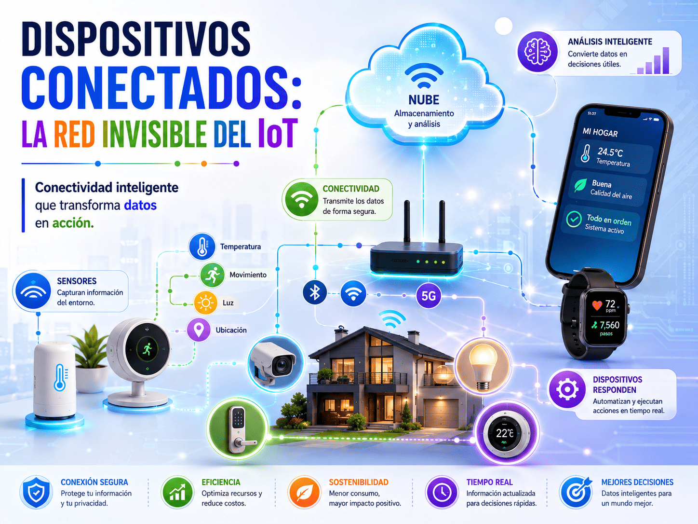
En cuanto a su principio de funcionamiento, este ecosistema requiere que los dispositivos "hablen un mismo idioma" a través de protocolos de red estandarizados, como MQTT, CoAP o HTTP.
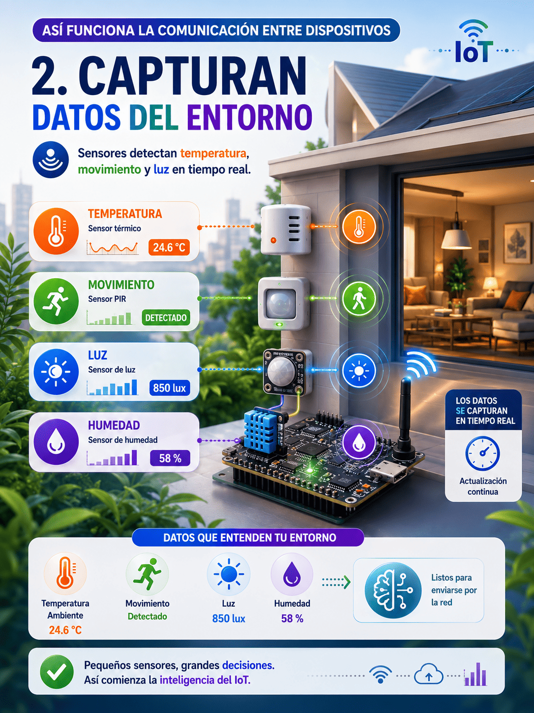
Cuando un dispositivo detecta un evento, traduce inmediatamente esa variable del entorno físico a un formato digital, empaquetándolo en fragmentos de datos manejables y transmitiéndolo mediante ondas electromagnéticas o medios físicos hacia un concentrador central. Para que la transferencia de estos paquetes de datos sea operativa y escalable, intervienen procesos internos específicos ejecutados a través de tres componentes principales:
Nodos de borde (Edge devices): Compuestos por sensores que capturan métricas en tiempo real y actuadores que ejecutan acciones físicas.
Gateways (Puertas de enlace): Dispositivos intermedios encargados de filtrar la información local y traducir los protocolos de comunicación de bajo voltaje o rango corto hacia redes IP estándar.
Plataformas en la nube: Servidores donde los sistemas computacionales procesan, almacenan y catalogan los datos mediante inteligencia artificial, emitiendo instrucciones de vuelta hacia los niveles inferiores.
No obstante, esta interconexión y convergencia de red se enfrenta a importantes desafíos o limitaciones físicos. La eficacia en la comunicación inalámbrica se ve fuertemente restringida por la capacidad del medio y la propagación de la señal. El límite máximo para enviar información libre de errores se modela mediante el teorema de Shannon-Hartley:
$$C = B \log_2 \left( 1 + \frac{S}{N} \right)$$Donde $C$ denota la capacidad del canal (en bits por segundo), $B$ el ancho de banda disponible, $S$ la potencia media de la señal transmitida
y $N$ representa la potencia del ruido. Sumado a esto, las caídas de potencia a medida que la señal viaja por el espacio limitan la distancia máxima efectiva, fenómeno ilustrado por la ecuación de transmisión de Friis:
$$P_r = P_t G_t G_r \left( \frac{\lambda}{4 \pi d} \right)^2$$Donde $P_r$ es la potencia recibida por el dispositivo destino, $P_t$ es la potencia de transmisión, $G_t$ y $G_r$ son las ganancias relativas de las antenas, $\lambda$ es la longitud de onda y $d$ la distancia de separación. Estas fórmulas dictan un profundo compromiso en el diseño de ingeniería: aumentar el rango o la velocidad ineludiblemente incrementa las exigencias de consumo energético ($S$ o $P_t$).
Estas mismas barreras físicas definen y segmentan las aplicaciones prácticas y el catálogo de protocolos según el escenario del usuario. Para un caso real residencial, como una bombilla inteligente, se adoptan estándares de corta distancia pero de alto ancho de banda como Wi-Fi o Zigbee, ya que los aparatos se encuentran a pocos metros del router y poseen suministro constante de electricidad. Diametralmente opuesto es el entorno de la agricultura inteligente; medir la humedad en un inmenso campo agrícola emplea redes LPWAN (como LoRaWAN o Sigfox), sacrificando intencionalmente la capacidad del canal ($C$) a cambio de prolongar la batería por un lustro y alcanzar distancias remotas superiores a los quince kilómetros.
A pesar de sus vicisitudes de implementación, dominar la eficiencia en este flujo de comunicación proporciona inmensas beneficios y ventajas a los esquemas de producción e infraestructura de la sociedad civil.
Comunicación entre dispositivos
Cuestionario falso o verdadero
¿Cómo funciona una casa inteligente?
Una casa inteligente es la manifestación más cotidiana del Internet de las Cosas (IoT), transformando una vivienda tradicional en un ecosistema digital interconectado. Su concepto fundamental se basa en dotar de conectividad a objetos de uso diario para que se comuniquen entre sí, generando un entorno autónomo. El principio de funcionamiento radica en la recopilación constante de información del entorno físico, la cual es enviada a la nube o a un procesador local para ser analizada en tiempo real. De este modo, los electrodomésticos, sistemas de iluminación y de climatización dejan de ser aparatos aislados y se convierten en nodos inteligentes capaces de tomar decisiones programadas o de aprender las rutinas de los usuarios.
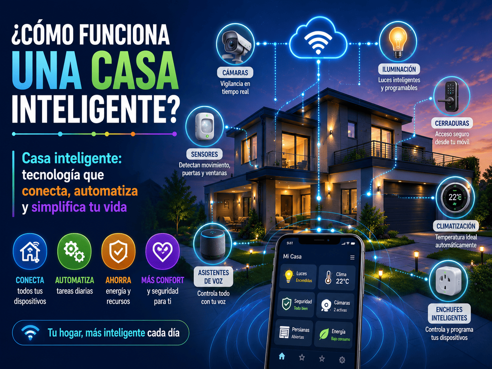
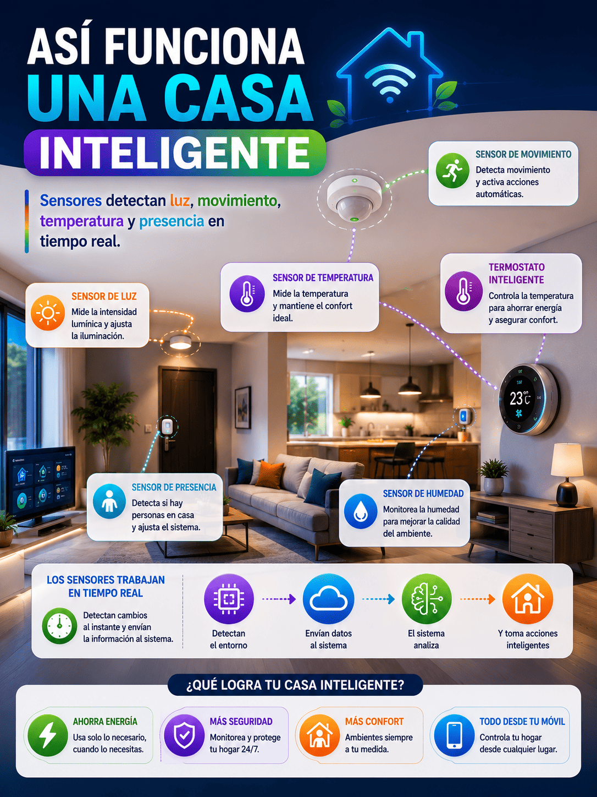
Para que esta intercomunicación sea viable, la arquitectura tecnológica se apoya en tres componentes principales:
Sensores: Actúan como los "sentidos" del hogar (termostatos, fotocélulas, detectores de humo y movimiento), encargados de capturar los datos físicos del ambiente.
Gestor de red o Hub: Es el núcleo por donde transita la información, utilizando protocolos de comunicación inalámbrica orientados al bajo consumo, como Wi-Fi, MQTT, Zigbee o Z-Wave.
Actuadores: Son los mecanismos físicos (relés, válvulas, motores) que ejecutan la orden final, como encender una bombilla o bloquear una puerta.
A través de estos componentes, los procesos internos fluyen en un ciclo lógico ininterrumpido: los sensores captan un estímulo material, el gestor traduce y envía esos paquetes de datos mediante algoritmos de control, y finalmente se emite un mandato hacia los actuadores correspondientes.
Las aplicaciones prácticas y los casos reales de esta tecnología abarcan desde el confort absoluto hasta la seguridad integral. Un ejemplo representativo es la gestión automática de la iluminación matutina. Al detectar a través del smartphone que el usuario ha despertado, el sistema abre las persianas motorizadas, enciende gradualmente luces cálidas y ordena a la cafetera comenzar a preparar el desayuno. En el ámbito de la seguridad, si un sistema magnético detecta la apertura inusual de una ventana cuando la casa está vacía, activa inmediatamente una sirena, envía una notificación móvil, y comienza a respaldar el video de las cámaras de seguridad directamente en servidores externos, todo en milisegundos.
Uno de los principales beneficios y ventajas de una vivienda automatizada es la maximización de la eficiencia energética. Desde el punto de vista de la física y la ingeniería eléctrica, la energía total consumida ($E$) por un electrodoméstico es proporcional a su potencia instalada ($P$) y al tiempo de funcionamiento ($t$):
$$E = P \cdot t$$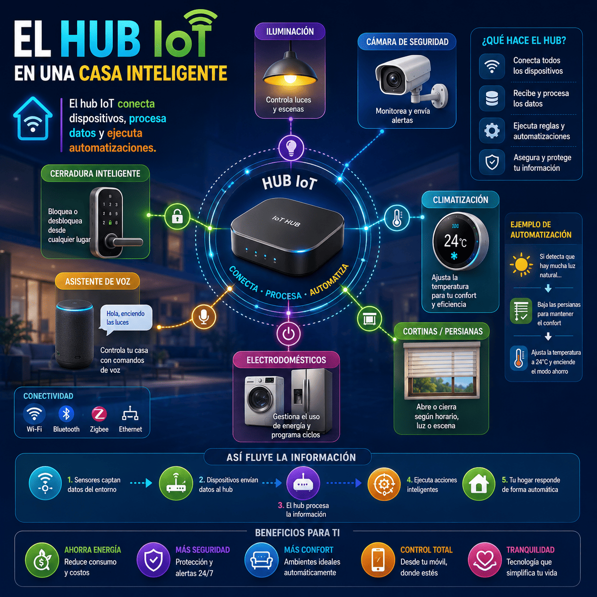
Considerando que en corriente alterna la potencia depende voltaje ($V$), la corriente ($I$) y el factor de potencia ($\cos \phi$), la ecuación de gasto energético se define como:
$$E = (V \cdot I \cdot \cos \phi) \cdot t$$Un sistema IoT no puede alterar las características físicas de los electrodomésticos (es decir, asume $V$, $I$ y $\cos \phi$ como constantes), pero la inteligencia artificial interviene directamente sobre la variable del tiempo ($t$). Al predecir horarios y apagar dispositivos fantasma o sistemas de climatización en habitaciones vacías, se minimiza $t$ de forma inteligente, garantizando que el consumo total $E$ disminuya drásticamente en la factura a final de mes.
A pesar de sus formidables ventajas, las casas inteligentes no están exentas de desafíos o limitaciones. El obstáculo más crítico es la vulnerabilidad de la ciberseguridad; si la red doméstica no posee cifrado avanzado, un atacante cibernético podría interceptar las comunicaciones, invadiendo la privacidad del usuario o incluso controlando las cerraduras digitales. Asimismo, la domótica moderna presenta una altísima dependencia tecnológica: las interrupciones imprevistas en el suministro eléctrico o la caída del proveedor de internet pueden inutilizar por completo la lógica del sistema, reduciendo temporalmente una vivienda de última generación a un conjunto de aparatos inertes.
En el siguiente objeto interactivo, presentamos una simulación de la cocina inteligente, que incluye: Encimera, Olla / Hervidor Conectado, campana extractora domótica, frigorífico inteligente IoT con pantalla táctil integrada y asistente Robótico de Cocina (Chef Bot).
Casa inteligente
Cuestionario
¿Cómo funciona una ciudad inteligente?
Una ciudad inteligente es un ecosistema urbano hiperconectado que utiliza las tecnologías del Internet de las Cosas (IoT) para recolectar datos en tiempo real, optimizar sus recursos y mejorar la calidad de vida de sus habitantes. El concepto fundamental radica en transformar la infraestructura urbana estática, como calles, tuberías y edificios, en una red viva y reactiva. Para lograr esto, se apoya en tres componentes principales: una capa de hardware que comprende millones de sensores y actuadores desplegados por toda la ciudad, una arquitectura de red inalámbrica para asegurar la transmisión fluida de la información, y centros vitales de computación en la nube o Edge Computing, impulsados por inteligencia artificial para el análisis de macrodatos (Big Data).
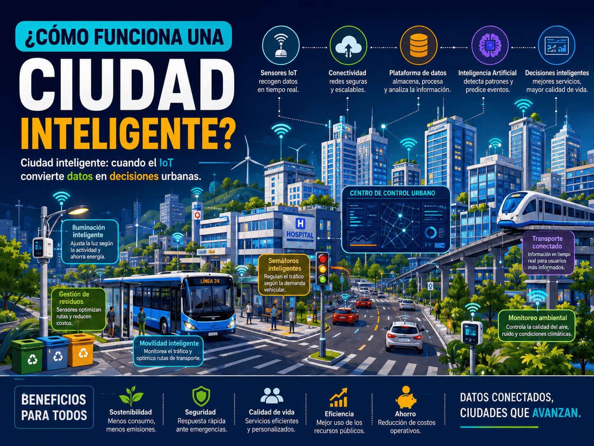
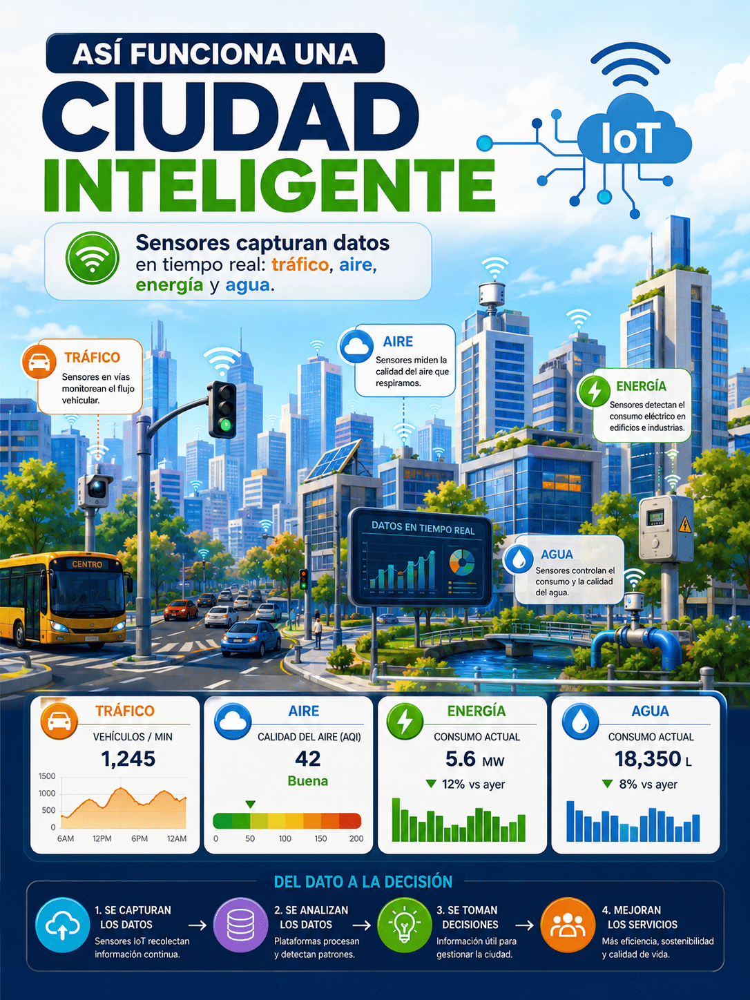
El principio de funcionamiento de esta metrópolis tecnológica se basa en un ciclo continuo de percepción, comunicación y acción. Los procesos internos inician cuando los dispositivos de recolección, como medidores de agua inteligentes o monitores acústicos, transforman eventos físicos cotidianos en datos digitales. Estos datos, al ser codificados, viajan de manera encriptada a través del tejido de conectividad urbana hacia plataformas de control central. Allí, algoritmos sofisticados procesan la información y disparan respuestas automatizadas directas hacia los actuadores. Por ejemplo, detectar la aglomeración de vehículos en una calle genera una orden de cambio en el patrón computarizado de los semáforos, sin intervención humana directa.
No obstante, el procesamiento de este flujo masivo de información impone retos ingenieriles críticos, ya que la comunicación a gran escala en el IoT urbano está sujeta a las leyes de la física. Para garantizar operaciones fiables, se debe calcular la capacidad máxima por cada enlace de la red utilizando el teorema de Shannon-Hartley, el cual define la tasa máxima teórica a la que los datos pueden transmitirse sin errores. Dicho límite, que fundamenta las telecomunicaciones de toda ciudad tecnológica, se expresa como:
$$C = B \log_2 \left( 1 + \frac{S}{N} \right)$$Donde $C$ es la capacidad del canal en bits por segundo, $B$ es el ancho de banda en hercios, $S$ es la potencia promedio de la señal y $N$ representa la potencia del ruido. Esta restricción matemática basada en la proporción $S/N$ explica por qué en zonas urbanas de alta densidad —con interferencia electromagnética severa— las metrópolis requieren desplegar tecnologías vanguardistas como el 5G o redes de área amplia de baja potencia (LPWAN) para evitar colapsos al manejar los datos.
Gracias a estas arquitecturas superan dichos límites, surgiendo múltiples aplicaciones prácticas que cambian el día a día ciudadano:
Movilidad adaptativa: Semáforos que alteran sus luces basándose en los flujos exactos del tráfico mediante cámaras termográficas.
Gestión de residuos ultrasónica: Contenedores de basura con sensores que miden su volumen interior para rediseñar las rutas diarias de los camiones recolectores solo a aquellos que están llenos.
Redes eléctricas (Smart Grids): Infraestructuras que detectan los picos en el consumo para inyectar automáticamente energía verde acumulada a distritos en momentos de estrés, previniendo apagones masivos.
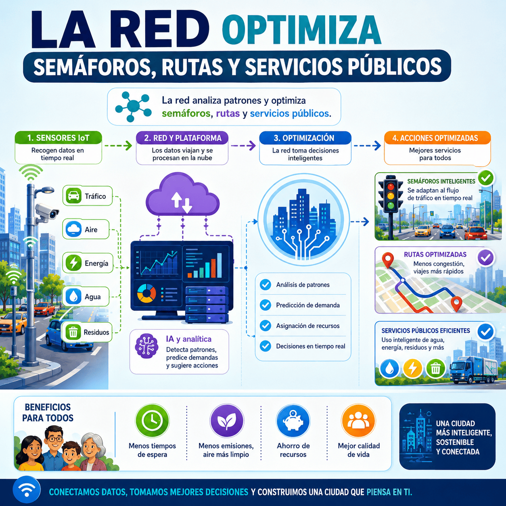
Estas aplicaciones muestran beneficios y ventajas innegables: se genera una reducción radical en la huella de carbono, optimización del presupuesto municipal y respuestas instantáneas ante emergencias policiales o de salud. Un caso real emblemático es el estado de Singapur, cuyo programa Smart Nation utiliza peajes dinámicos controlados por IoT para evitar congestiones. Sin embargo, la vulnerabilidad ante ciberataques podría paralizar suministros críticos completos, y la extrema vigilancia digital sitúa sobre la mesa un severo debate ético sobre la privacidad civil.
Ciudad inteligente
Cuestionario
¿Cómo funciona el IoT industrial?
El Internet de las Cosas Industrial (IIoT), a diferencia de su contraparte de consumo, opera en la intersección de las Tecnologías de la Información (IT) y la Tecnología Operativa (OT). Su principio de funcionamiento se basa en dotar a la maquinaria pesada, líneas de ensamblaje e infraestructuras críticas de una "percepción digital" de su entorno y estado. Esto se logra mediante la interconexión a gran escala de instrumentos y dispositivos inteligentes que recopilan, procesan e intercambian datos en tiempo real. Debido a que en un entorno industrial industrial un fallo de microsegundos puede resultar en pérdidas millonarias o riesgos de seguridad graves, el IIoT funciona bajo arquitecturas robustas que garantizan una altísima fiabilidad y una muy baja latencia.
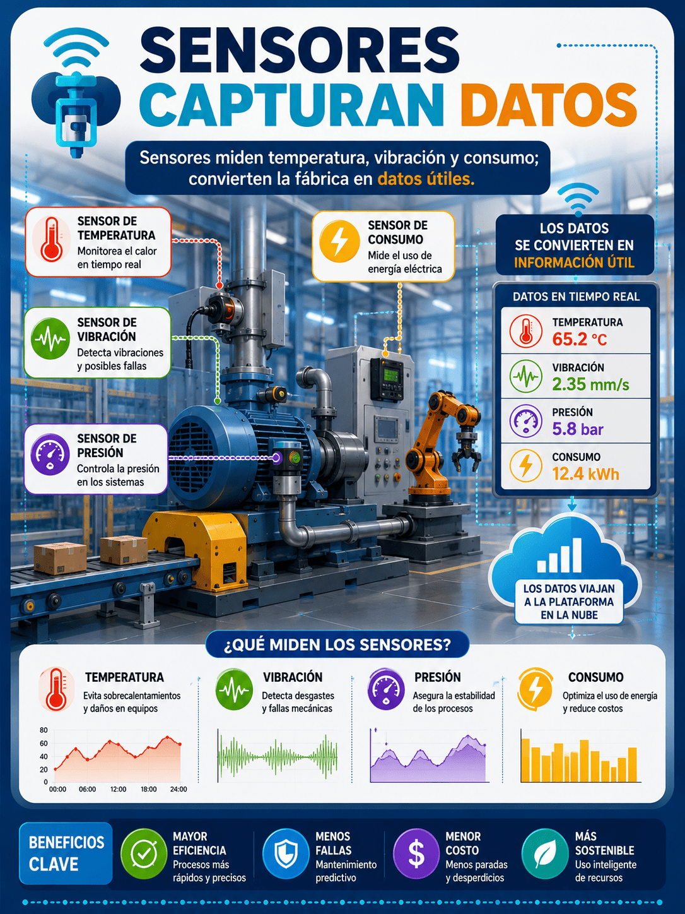
Para ejecutar este complejo flujo de datos, los sistemas IIoT dependen de varios componentes principales, los cuales llevan a cabo procesos internos altamente coordinados en diferentes capas tecnológicas:
Sensores y actuadores de grado industrial: Son la interfaz física. Capturan variables continuas (temperatura, presión, nivel de vibración) y ejecutan comandos mecánicos de respuesta inmediata.
Edge Computing (Computación en el borde): Consiste en procesadores ubicados físicamente cerca de la maquinaria. Filtran y analizan datos críticos en milisegundos sin depender de una conexión remota, permitiendo acciones automáticas y de emergencia.
Gateways o pasarelas de enlace industrial: Equipos que recolectan la información del "borde", traducen protocolos industriales antiguos a estándares de Internet modernos y cifran los datos antes de su envío.
Plataformas en la nube: Servidores centralizados y masivos donde algoritmos avanzados procesan los terabytes de datos históricos para extraer conocimiento estratégico a largo plazo.
Uno de los principales beneficios y ventajas de implementar esta tecnología es la mejora medible y sistemática de la eficiencia en el piso de producción. El funcionamiento del ecosistema interconectado maximiza la Eficiencia General de los Equipos (conocida como OEE, por sus siglas en inglés), un indicador matemático vital en la manufactura que se define como:
$$OEE = D \times R \times C$$Donde $D$ representa la Disponibilidad (el tiempo operativo neto frente al planificado), $R$ es el Rendimiento (la velocidad real de
producción) y $C$ es la Calidad (la proporción de unidades procesadas sin defectos). Al monitorear flujos de trabajo en tiempo real, un sistema IIoT puede, por ejemplo, detectar el calentamiento anómalo de un motor e indicarle al actuador que reduzca la carga de trabajo ($R$) para evitar un daño catastrófico que provoque un paro prolongado de la planta ($D$), manteniendo así métricas óptimas y asegurando la rentabilidad global.
En cuanto a sus aplicaciones prácticas y casos reales, el paradigma moderno del mantenimiento predictivo es el estandarte del IIoT. En una fábrica automotriz tradicional, los motores o brazos robóticos suelen revisarse siguiendo un calendario fijo, o directamente se reparan una vez que fallan. Sin embargo, con el IoT industrial, el análisis acústico y de vibraciones ejecutado por inteligencia artificial en los sensores permite detectar la fatiga sutil de un rodamiento semanas antes de que ocurra una rotura física. Este sistema predice con exactitud estadística cuándo fallará la máquina y agenda el mantenimiento de manera desatendida, evitando por completo las paralizaciones masivas y el despilfarro de mano de obra.
No obstante, el funcionamiento del IoT industrial también enfrenta importantes desafíos y limitaciones. La ciberseguridad se alza como el riesgo número uno; históricamente, los equipos y maquinaria industrial operaban aislados de internet (una medida conocida como air-gap). Conectar infraestructuras enteras a redes globales abre vectores de ataques informáticos que podrían paralizar plantas de agua, redes eléctricas completas o sistemas de manufactura. A esto se suma el problema técnico de la interoperabilidad: las fábricas poseen equipos heredados (legacy) con décadas de antigüedad y docenas de protocolos cerrados de distintos fabricantes, lo que hace que unificar y sincronizar todas las máquinas en un solo estándar requiera una elevadísima inversión monetaria inicial.
El IoT industrial
Cuestionario
¿Cómo funciona la computación en el borde (Edge Computing)?
Para entender el concepto fundamental de la computación en el borde (o Edge Computing), resulta útil imaginar una gran corporación multinacional. Si cada decisión menor tuviera que ser consultada y aprobada por la sede central, la empresa colapsaría por la lentitud operativa. En el Internet de las Cosas (IoT) ocurre exactamente lo mismo: los dispositivos generan una inmensa cantidad de datos constantemente y, en lugar de enviar toda esa información bruta a un servidor central en la nube, el Edge Computing traslada el poder de procesamiento computacional lo más cerca posible de la fuente de los datos. De esta manera, el procesamiento tiene lugar en el "borde" geográfico de la red, lo que permite que la tecnología filtre, analice y actúe de forma casi instantánea.
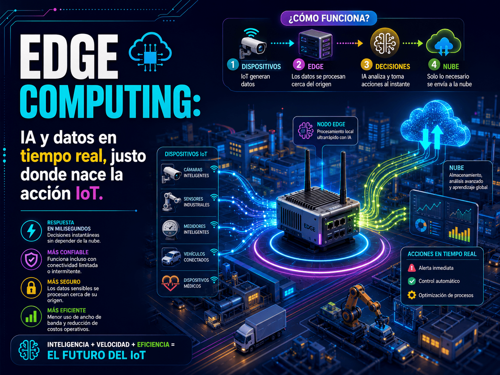
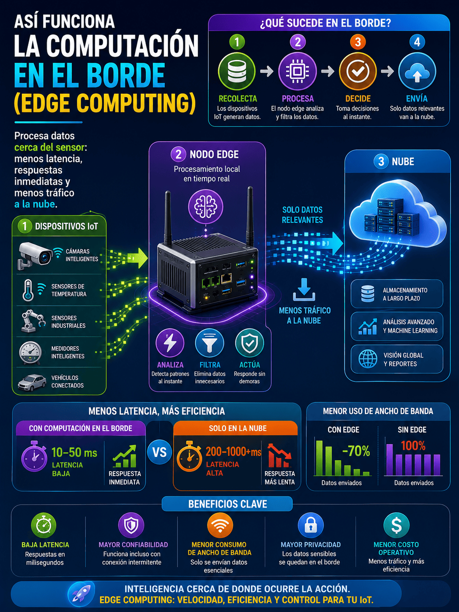
En cuanto a sus procesos internos, el flujo de trabajo cambia radicalmente en comparación con el IoT tradicional. Cuando un sensor capta una lectura del mundo físico, en lugar de transmitirla ciegamente mediante internet, la envía a un micro-servidor local. Este equipo ejecuta algoritmos (frecuentemente de inteligencia artificial) e infiere resultados in situ. La razón física y matemática para hacer esto radica en el retardo de la transmisión bidireccional. Si modelamos el tiempo total de respuesta ($T_{total}$) de un sistema basado estrictamente en la nube, observamos una fuerte dependencia del tiempo que tarda el paquete de red en viajar ($T_{red}$):
$$T_{total} = T_{procesamiento} + 2 \cdot T_{red}$$Donde $2 \cdot T_{red}$ representa el viaje de ida vuelta de los datos hacia los servidores en la nube más las latencias de enrutamiento. Al implementar Edge Computing, el componente dependiente de la red extensa ($T_{red}$) tiende prácticamente a cero, permitiendo que las decisiones se ejecuten en una fracción de milisegundo.
Para orquestar esta arquitectura descentralizada, es necesaria la interacción armónica de varios componentes principales:
Dispositivos de borde (End-devices): Sensores, cámaras y actuadores que recogen pasivamente o interaccionan directamente con el mundo físico.
Pasarelas de borde (Edge Gateways): Hardware alojado en las propias instalaciones, dotado de capacidad de cálculo local y memoria que centraliza de forma temporal los datos de los sensores.
Infraestructura de conectividad local: Tecnologías de escasa latencia como Wi-Fi 6, Bluetooth o redes 5G privadas que comunican los sensores con los gateways.
La Nube (Cloud Central): Aunque ya no procesa datos crudos, se mantiene para realizar almacenamientos históricos, entrenar modelos complejos de Machine Learning y perfilar análisis a largo plazo.
El uso de un paradigma de este tipo proporciona notables beneficios y ventajas al ecosistema IoT. El ahorro del ancho de banda es fenomenal; un gateway en el borde solo enviará alertas específicas o estadísticas comprimidas a la nube, ahorrando costes inmensos de transmisión de datos inútiles. Simultáneamente, otorga una drástica mejora en la privacidad, ya que datos sensibles o grabaciones en vídeo o audio no abandonan nunca el perímetro local, protegiéndolos contra intercepciones. Además, confiere una gran autonomía a la infraestructura: si el servicio de internet exterior falla por una tormenta o un corte de cable, el sistema de borde interno continuará sus funciones de control y alerta ininterrumpidamente.
Podemos observar la importancia vital de esta tecnología analizando ejemplos y casos reales, siendo quizás el más ilustrativo el de los vehículos autónomos. Un coche inteligente moderno y pertrechado con sensores y radares LiDAR está constantemente calculando entornos, produciendo gigabytes de información por segundo. Si el vehículo dependiera de la nube para decidir si frenar ante un paso de peatones, la latencia de la red resultaría literalmente en un accidente fatal. Al emplear procesadores internos (en el borde del propio automóvil), el cómputo de la orden demora solo instantes. No obstante, esto impone importantes desafíos o limitaciones al sector: el hardware en el borde tiene restricciones de espacio, un control estricto del consumo energético y de disipación de calor, además de presentar un innegable reto logístico de mantenimiento al tener miles de microcomputadoras desplegadas físicamente por todo el globo.
La computación en el borde (Edge Computing)
Cuestionario
¿Cómo funciona la seguridad en el IoT?
La seguridad en el Internet de las Cosas (IoT) es la práctica de salvaguardar los dispositivos conectados y las redes en las que operan, garantizando el concepto fundamental de la confidencialidad, integridad y disponibilidad de los datos. A diferencia de los ordenadores tradicionales, el contexto del IoT presenta grandes desafíos y limitaciones que radican en la propia naturaleza de los equipos: suelen tener capacidades de procesamiento extremadamente bajas, cuentan con poca memoria y a menudo operan con pequeñas baterías. Esto significa que no siempre pueden ejecutar soluciones de seguridad complejas o antivirus pesados, lo que crea una vasta superficie de ataque cibernético si no se aplican protocolos eficientes y ligeros desde su diseño original.
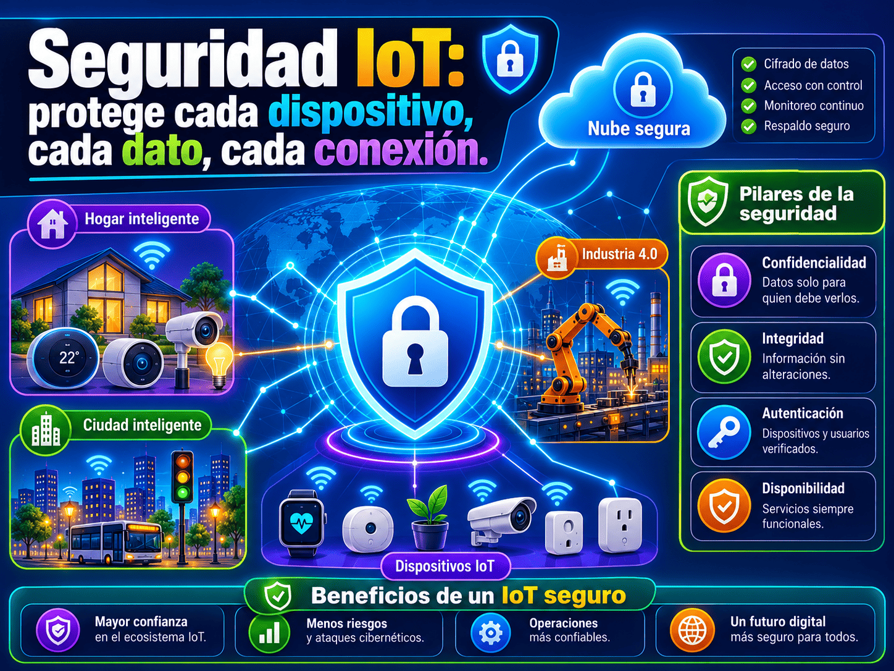
Para resolver este problema, la infraestructura se apoya en componentes principales como la autenticación biométrica o multifactorial, los cortafuegos perimetrales para redes y, de manera irremplazable, la criptografía de datos. Durante sus procesos internos, los microcontroladores IoT utilizan algoritmos de cifrado para transformar la lectura del sensor en texto cifrado antes de transmitirla. Por ejemplo, en los esquemas de criptografía asimétrica como RSA, el proceso matemático base para encriptar un mensaje inicial $m$ y transformarlo en un texto cifrado $c$ utiliza una clave pública $(e, n)$ mediante la siguiente relación modular:
$$c \equiv m^e \pmod{n}$$Posteriormente, el servidor central o dispositivo receptor legítimo utiliza su clave privada $d$ para descifrar la información aplicando la operación inversa, garantizando matemáticamente que si un pirata informático intercepta los datos inalámbricos, solo obtenga secuencias numéricas aleatorias indescifrables.
El principio de funcionamiento en un ecosistema IoT resiliente se inspira en la "Defensa en Profundidad", estableciendo múltiples barreras de seguridad. Esta estrategia se divide típicamente en tres frentes estructurales:
Seguridad a nivel dispositivo: Exige el uso de un arranque seguro (Secure Boot) que verifica mediante firmas digitales que el firmware operativo no ha sido alterado de manera perjudicial.
Seguridad a nivel red: Utiliza protocolos de transporte seguro diseñados para baja latencia (como TLS o DTLS) para aislar flujos de información y asegurar conexiones puente (gateways).
Gestión del ciclo de vida: Implementa sistemas de actualización remota (Over-The-Air) para parchear rápidamente nuevas vulnerabilidades descubiertas y renovar de manera continua las credenciales locales.
Comprender la importancia vital de esta estructura requiere analizar casos reales donde la ausencia de medidas de seguridad causó estragos. Un ejemplo infame es el ataque de la botnet Mirai en 2016, donde ciberdelincuentes secuestraron cientos de miles de cámaras IP y enrutadores domésticos, rastreando puertos abiertos y aprovechando contraseñas por defecto predecibles. Estos equipos formaron involuntariamente un ejército cibernético para lanzar un ataque masivo de denegación de servicio (DDoS) que llegó a paralizar partes cruciales de internet. Este evento histórico reconfiguró las aplicaciones prácticas del sector tecnológico actual; hoy en día, desde cámaras de seguridad hasta marcapasos médicos conectados, los marcos regulatorios exigen la eliminación de credenciales genéricas de fábrica y fuerzan dinámicamente configuraciones personalizadas del usuario.
Finalmente, invertir recursos físicos e intelectuales en resolver esto ofrece valiosos beneficios y ventajas a largo plazo. Una arquitectura IoT bien blindada no solo protege la privacidad del individuo evitando fugas de información personal, sino que garantiza la continuidad material en ramas como el Internet de las Cosas Industrial (IIoT). Cuando la seguridad funciona silenciosamente en segundo plano repeliendo amenazas, se fomenta la confianza pública, lo cual permite que miles de millones de sensores converjan globalmente para automatizar procesos agrícolas, optimizar el consumo de energía en hogares inteligentes y mejorar nuestras ciudades sin temor al sabotaje digital.
La seguridad en el IoT
Cuestionario
¿Cómo funcionará el futuro del Internet de las Cosas?
El futuro del Internet de las Cosas (IoT) representa un salto evolutivo desde la simple recolección de datos hacia la autonomía inteligente, dando lugar a lo que se conoce como AIoT (Inteligencia Artificial de las Cosas). En su concepto fundamental, las redes dejarán de ser meras transmisoras de información para convertirse en "sistemas nerviosos" cognitivos capaces de tomar decisiones en tiempo real sin intervención humana. Entre los componentes principales que harán posible esta arquitectura destacan las futuras redes de conectividad inalámbrica extrema (como el 6G), los microprocesadores neuromórficos y los revolucionarios sensores cuánticos.
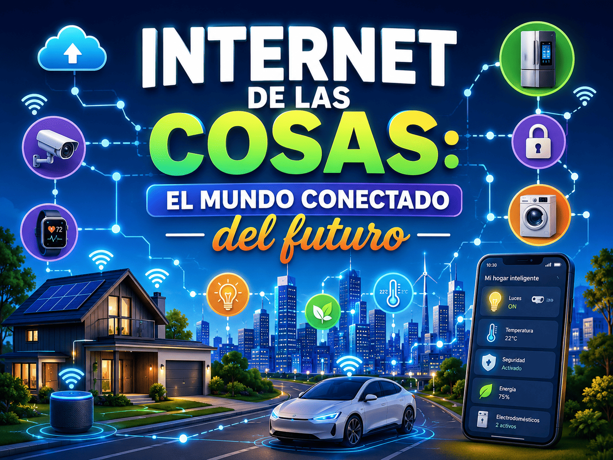
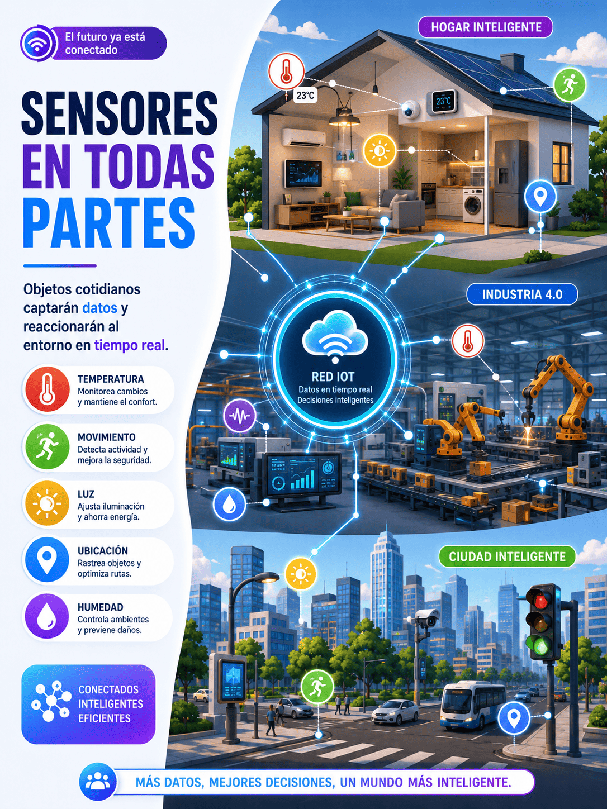
Para comprender el principio de funcionamiento que sostendrá estas inmensas redes hiperconectadas, es fundamental analizar las leyes físicas de la transmisión de datos. A medida que exponencialmente más de dispositivos busquen comunicarse, el flujo de información estará gobernado por el Teorema de Shannon-Hartley, el cual define la capacidad máxima teórica de un canal de comunicación. Esta ley se expresa mediante la ecuación:
$$C = B \log_2 \left( 1 + \frac{S}{N} \right)$$Donde $C$ es la capacidad del canal (en bits por segundo), $B$ el ancho de banda disponible en hercios, $S$ la potencia de la señal útil y $N$ la potencia del ruido subyacente. Para evitar el colapso de la red ante billones de conexiones, el futuro del IoT requiere expandir radicalmente $B$ utilizando frecuencias de terahercios y mejorar drásticamente la relación señal/ruido ($\frac{S}{N}$) a través de metamateriales y antenas de formación de haces dinámicos.
A nivel de procesos internos, el futuro ecosistema solucionará los cuellos de botella mediante el Edge Computing (computación en el borde). En lugar de enviar todos los datos brutos a servidores en la nube centralizados, el procesamiento mediante algoritmos de redes neuronales ocurrirá localmente en el propio microcontrolador del dispositivo. Los beneficios y ventajas de esta descentralización son monumentales: una latencia casi nula (frecuentemente inferior a $1$ milisegundo), un ahorro drástico en el consumo de ancho de banda y una mejora intrínseca en la privacidad, ya que los datos personales sensibles nunca abandonan físicamente el entorno del usuario.
Las aplicaciones prácticas y los casos reales proyectados para este nuevo horizonte tecnológico transformarán radicalmente industrias enteras y nuestra forma de interactuar con el entorno:
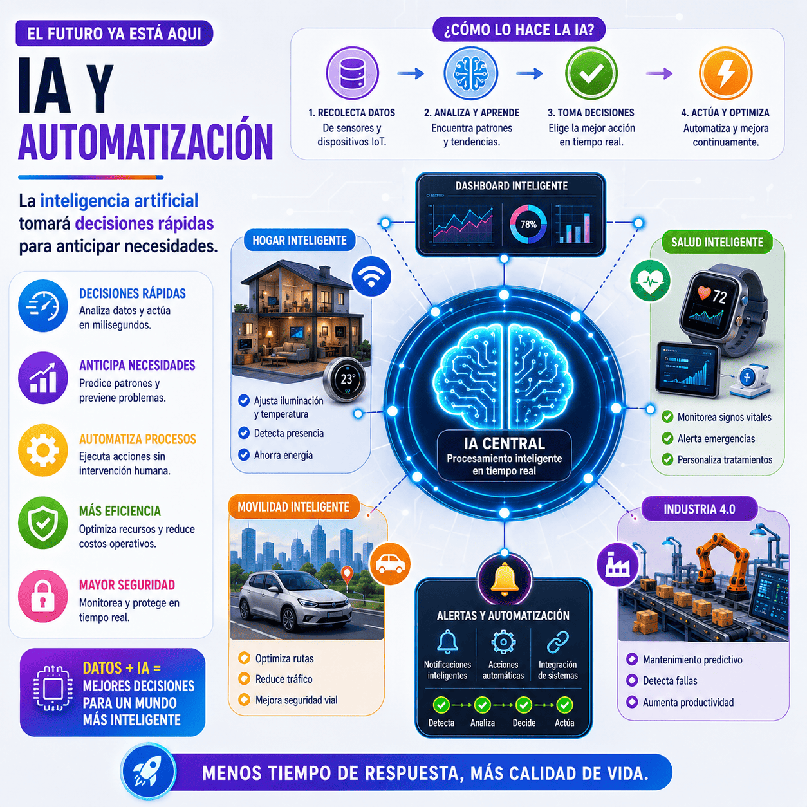
Vehículos completamente autónomos (V2X): Automóviles comunicándose en modo enjambre tanto con otros coches como con los semáforos, ajustando sus trayectorias mediante predicción matemática para reducir los embotellamientos e incidentes viales a cero.
Salud predictiva intervencionista: Nanosensores biométricos integrados en el torrente sanguíneo que no solo monitorizan glucosa u oxígeno, sino que logran anticipar accidentes cardiovasculares y liberan autónomamente un fármaco para prevenir el evento horas antes de que ocurra.
Agricultura algorítmica: Cultivos monitorizados planta por planta, donde drones polinizadores e irrigadores precisos ajustan constantemente los niveles de humedad mediante análisis de microclimas, ahorrando millones de litros de agua dulce al año.
Por supuesto, materializar esta visión conlleva formidables desafíos y limitaciones. El primer gran obstáculo es la ciberseguridad; la ampliación masiva de la superficie de ataque significa que una vulnerabilidad en un simple termostato doméstico podría servir como puerta de entrada para vulnerar infraestructuras críticas. Paralelamente, existe un límite termodinámico crucial: el consumo energético y la vida útil de las baterías. Lograr un ecosistema de IoT ecológicamente sostenible exigirá el perfeccionamiento del energy harvesting para que no dependamos de millones de baterías altamente contaminantes.